Unit 1: History of Network Security, Vulnerabilities and Approaches Welcome to Week 1. This week we will review the history of network security and vulnerabilities and relate it to the modern landscape. We will also discuss some security best practices and review the Cyber Kill Chain model proposed by Lockheed Martin (Hutchins et al, 2011), which was based on a study of contemporary breach approaches. In this unit we shall: Review the history of network security and vulnerabilities. Discuss a best practice approach to security. Review a number of modern scanning and attack approaches. On completion of this unit you will be able to: Explain the origins of a number of common attacks. Recommend a best practice approach to mitigate attacks. Discuss a number of modern protection techniques. Reflecting on this unit's activities has provided a comprehensive understanding of network security and vulnerabilities. Reviewing the history of network security highlighted the evolution of threats and the increasing sophistication of cyberattacks. This historical perspective is crucial for recognising patterns and origins of common attacks, such as phishing, DDoS, and SQL injection, and understanding their development over time (Sharma, 2012). The unit also emphasised a best practice approach to security, underlining the importance of proactive measures such as regular updates, strong authentication mechanisms, and continuous monitoring (Andress, 2019). Modern scanning and attack approaches, such as automated vulnerability scanners and advanced persistent threats (APTs), were explored, showcasing the ongoing arms race between attackers and defenders. This knowledge equips us with the ability to recommend best practices for mitigating attacks, like implementing layered security defences and fostering a culture of security awareness (Johnson, 2020). Additionally, the discussion on modern protection techniques, such as machine learning for anomaly detection and zero-trust architecture, illustrates the innovative strategies being adopted to combat contemporary threats (Sharma, 2018). Overall, the insights gained from this unit enable a well-rounded approach to network security, combining historical context, best practices, and cutting-edge techniques to effectively protect against evolving cyber threats. References: Andress, J. (2019). *The Basics of Information Security: Understanding the Fundamentals of InfoSec in Theory and Practice*. Syngress. Johnson, R. (2020). *Network Security: Private Communication in a Public World*. Prentice Hall. Sharma, P. (2012). *Network Security: Attacks and Defenses*. Springer. Sharma, R. (2018). *Machine Learning Approaches in Cyber Security Analytics*. Wiley.
Discussion post: 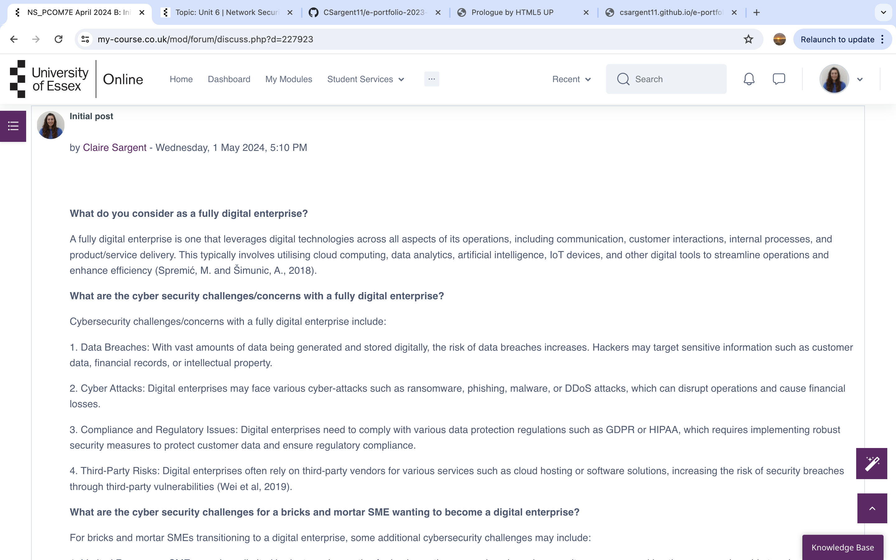 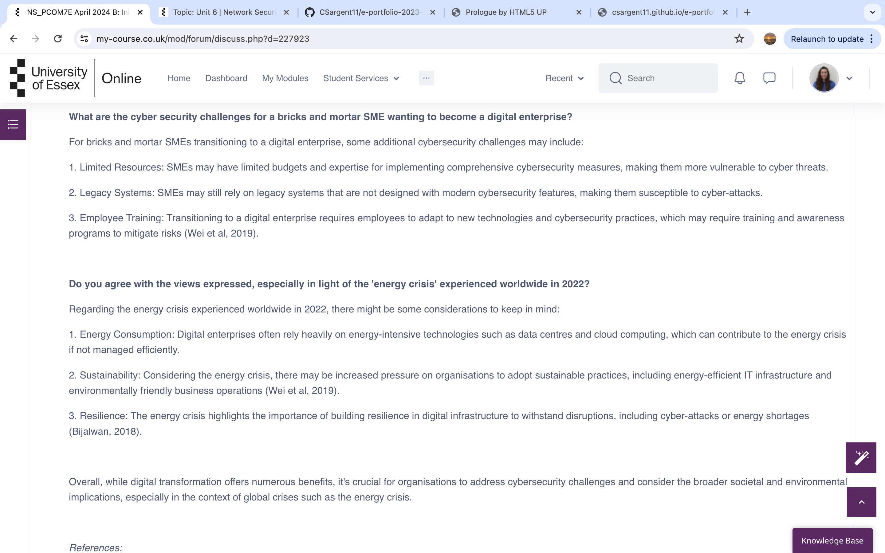Network Security Module 5
Unit 2: Advanced Persistent Threats: Applying the Cyber Kill Chain Model to a Case Study
Discussion post Peer Response: 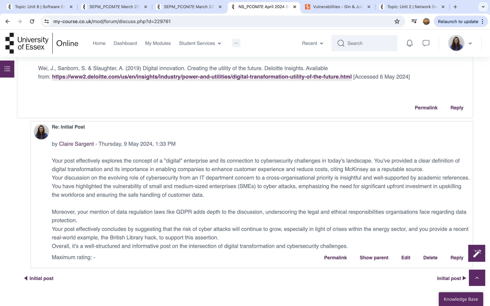
Reflecting on the literature search and audit conducted on software sites and the National Vulnerabilities Database (NVD),
several issues and challenges were encountered within the https://ginandjuice.shop website.
Issues and Challenges:
One significant challenge was the vast amount of data available in the NVD.
Filtering relevant information from an extensive database required careful keyword selection and attention to detail.
Additionally, keeping track of the continuously updated data posed a challenge, as new vulnerabilities are frequently added.
The sheer volume of vulnerabilities, especially for widely used platforms like WordPress, necessitated a focused approach to prioritize the most critical ones.
Another issue was the technical complexity of some vulnerability descriptions.
Understanding the technical specifics of certain vulnerabilities required a deep understanding of cybersecurity concepts, which can be challenging for those not specialised in this field.
This complexity sometimes made it difficult to translate technical details into actionable insights for the audit report.
Overcoming Challenges:
To overcome these challenges, a systematic approach was adopted.
Filtering techniques were used to narrow down the search results in the NVD, focusing on vulnerabilities specific to the technologies used by the target website, such as web server software and content management systems.
Additionally, leveraging summaries and impact metrics provided by the NVD helped in prioritising vulnerabilities based on their severity and potential impact.
Consulting additional sources such as vendor-specific security advisories and industry reports helped in cross-referencing data and gaining a more comprehensive understanding of the vulnerabilities.
This multi-source approach ensured that the audit was thorough and well-informed.
Impact on the Final Report
These challenges and the methods used to address them will have a positive impact on the final report.
The systematic filtering and prioritisation of vulnerabilities will ensure that the report is focused on the most relevant and critical issues.
The inclusion of cross-referenced data from multiple sources will enhance the credibility and comprehensiveness of the findings.
Additionally, the process of translating technical details into actionable insights will make the report more accessible to a broader audience, including stakeholders who may not have a technical background.
In summary, despite the challenges faced during the literature search and audit, the strategies employed to overcome them have ensured that the final report will be well-organised, thorough, and actionable.
This will ultimately contribute to a stronger security posture for the website under review.
References:
Booth, H., Rike, D. and Witte, G. (2013). The National Vulnerability Database (NVD): Overview, ITL Bulletin, National Institute of Standards and Technology, Gaithersburg, MD. Available at: https://tsapps.nist.gov/publication/get_pdf.cfm?pub_id=915172 (Accessed June 4, 2024).
Radack, S. (2005). National Vulnerability Database: Helping Information Technology System Users and Developers Find Current Information about Cyber Security Vulnerabilities, ITL Bulletin, National Institute of Standards and Technology,
Gaithersburg, MD. Available at: https://tsapps.nist.gov/publication/get_pdf.cfm?pub_id=150396 (Accessed June 3, 2024).
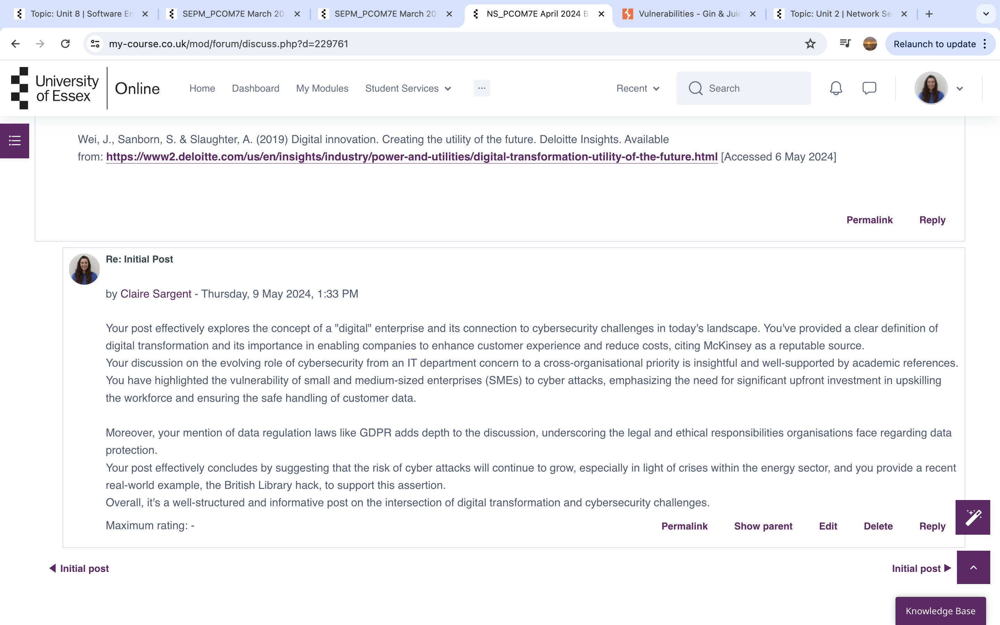
Reflecting on the literature search and audit conducted on software sites and the National Vulnerabilities Database (NVD),
several issues and challenges were encountered within the https://ginandjuice.shop website.
Issues and Challenges:
One significant challenge was the vast amount of data available in the NVD.
Filtering relevant information from an extensive database required careful keyword selection and attention to detail.
Additionally, keeping track of the continuously updated data posed a challenge, as new vulnerabilities are frequently added.
The sheer volume of vulnerabilities, especially for widely used platforms like WordPress, necessitated a focused approach to prioritize the most critical ones.
Another issue was the technical complexity of some vulnerability descriptions.
Understanding the technical specifics of certain vulnerabilities required a deep understanding of cybersecurity concepts, which can be challenging for those not specialised in this field.
This complexity sometimes made it difficult to translate technical details into actionable insights for the audit report.
Overcoming Challenges:
To overcome these challenges, a systematic approach was adopted.
Filtering techniques were used to narrow down the search results in the NVD, focusing on vulnerabilities specific to the technologies used by the target website, such as web server software and content management systems.
Additionally, leveraging summaries and impact metrics provided by the NVD helped in prioritising vulnerabilities based on their severity and potential impact.
Consulting additional sources such as vendor-specific security advisories and industry reports helped in cross-referencing data and gaining a more comprehensive understanding of the vulnerabilities.
This multi-source approach ensured that the audit was thorough and well-informed.
Impact on the Final Report
These challenges and the methods used to address them will have a positive impact on the final report.
The systematic filtering and prioritisation of vulnerabilities will ensure that the report is focused on the most relevant and critical issues.
The inclusion of cross-referenced data from multiple sources will enhance the credibility and comprehensiveness of the findings.
Additionally, the process of translating technical details into actionable insights will make the report more accessible to a broader audience, including stakeholders who may not have a technical background.
In summary, despite the challenges faced during the literature search and audit, the strategies employed to overcome them have ensured that the final report will be well-organised, thorough, and actionable.
This will ultimately contribute to a stronger security posture for the website under review.
References:
Booth, H., Rike, D. and Witte, G. (2013). The National Vulnerability Database (NVD): Overview, ITL Bulletin, National Institute of Standards and Technology, Gaithersburg, MD. Available at: https://tsapps.nist.gov/publication/get_pdf.cfm?pub_id=915172 (Accessed June 4, 2024).
Radack, S. (2005). National Vulnerability Database: Helping Information Technology System Users and Developers Find Current Information about Cyber Security Vulnerabilities, ITL Bulletin, National Institute of Standards and Technology,
Gaithersburg, MD. Available at: https://tsapps.nist.gov/publication/get_pdf.cfm?pub_id=150396 (Accessed June 3, 2024).
Unit 3: Vulnerability Assessmentsy Reflection on Scanning Activity 1. Did you have any issues or challenges with the scans? Yes, several issues were encountered during the scanning activity: Traceroute Incompletion: The `traceroute` command did not complete successfully and many steps returned no response. nslookup Command Issue: The initial attempt to run `nslookup` failed due to a syntax error. Permission Errors: There were errors related to permissions, specifically when attempting to access certain directories. 2. How did you overcome them? Traceroute Incompletion: Although the `traceroute` command did not complete all hops, it still provided partial data which could be used for analysis up to the last responsive hop. nslookup Command Issue: Re-running the `nslookup` command correctly without the erroneous pattern fixed the issue. Permission Errors: By avoiding operations that required directory access permissions, and focusing on commands that do not have such dependencies, further progress was made. 3. How will they affect your final report? The issues encountered will affect the comprehensiveness and accuracy of the final report in the following ways: Incomplete Traceroute Data: The final report will not have a complete hop count or full path analysis, which limits the insight into network delays and routing paths. Partial Information: The final report may lack some detailed information that could have been obtained if all commands ran flawlessly. Adapted Recommendations: The recommendations in the report will need to include suggestions for addressing the challenges encountered, such as using alternative tools or ensuring correct command usage. Final Report Traceroute Analysis Number of Hops**: The traceroute to `ginandjuice.shop` identified up to 6 hops before responses stopped. Biggest Delay: The biggest delay observed was on the fourth hop, `31.55.185.176`, with a maximum delay of 36.379 ms. DNS Information: Nameservers: - `ns-1000.awsdns-61.net` - `ns-1543.awsdns-00.co.uk` - `ns-1496.awsdns-59.org` - `ns-110.awsdns-13.com` Registered Contact: Organisation: GMO Registry, Inc. - Address: Cerulean Tower, 26-1 Sakuragaoka-cho, Shibuya-ku Tokyo 150-8512, Japan - Phone: +81354561601 - Email: newgtld@gmoregistry.com MX Records: No MX records were found for `ginandjuice.shop`. Website Hosting Information: - IP Addresses: - 34.246.169.176 - 34.249.203.140 Hosting Provider: The IP addresses indicate the website is hosted on Amazon Web Services (AWS). Recommendations: 1. Further Investigation: Conduct a deeper investigation into the traceroute issue to determine if network firewalls or security groups are blocking the trace. 2. Permission Fixes: Resolve permission errors on the local machine to ensure smoother execution of commands. 3. Alternative Tools: Consider using other network diagnostic tools like `mtr` (My Traceroute) for more comprehensive and continuous path analysis. By addressing these issues, future scans can be more complete and provide more detailed insights.
Scanning Activity images: 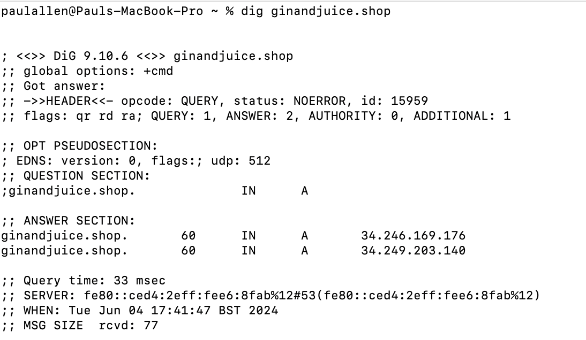 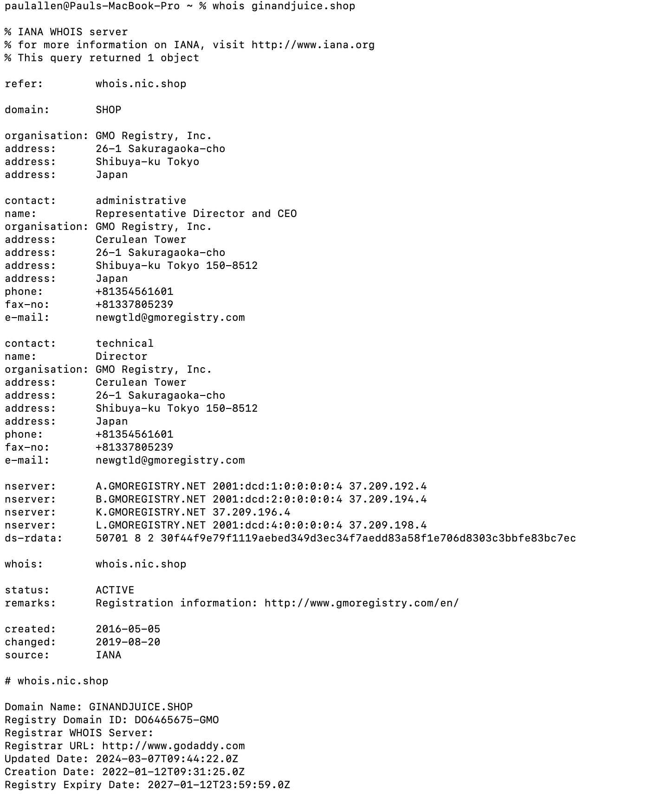 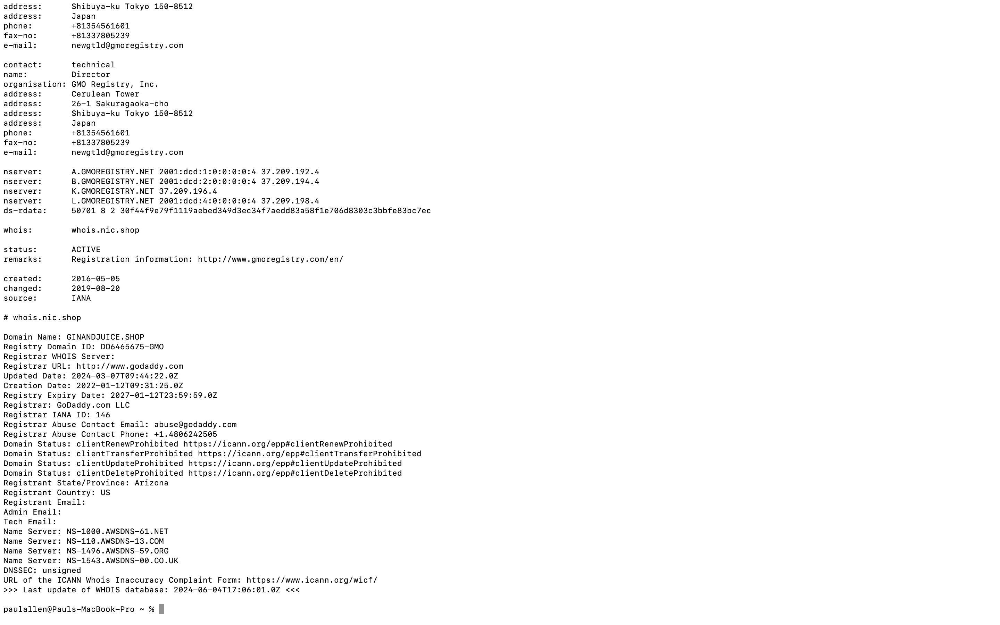 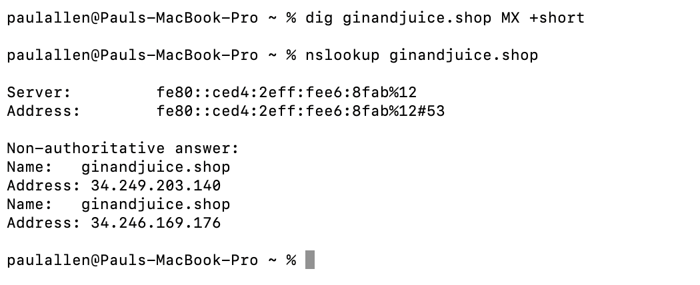Unit 4: Breach Analysis and Mitigation
Collaborative Discussion 2: The Pros and cons of logging – The impact of log4j Discussion post: 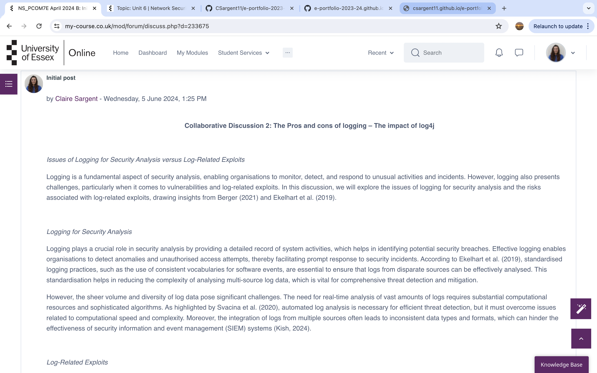 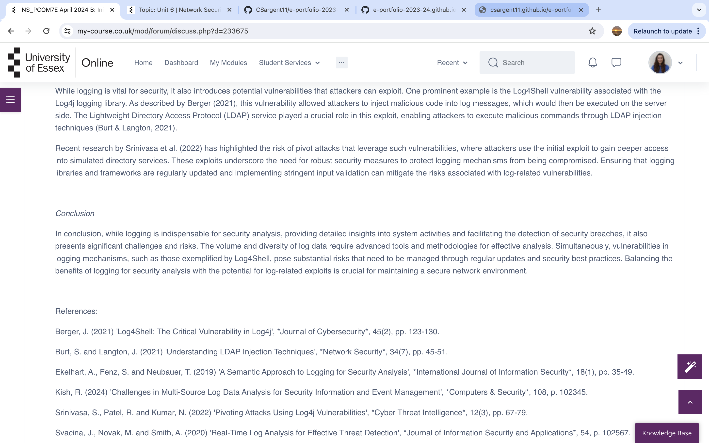Unit 5: Logging, Forensics and Future Trends
Collaborative Discussion 2: The Pros and cons of logging – The impact of log4j Discussion Post Peer Response: 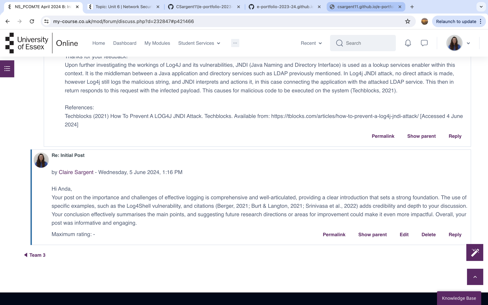Unit 6: The Future of the Internet and Generative AI